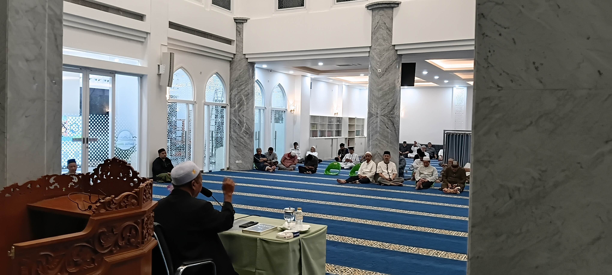
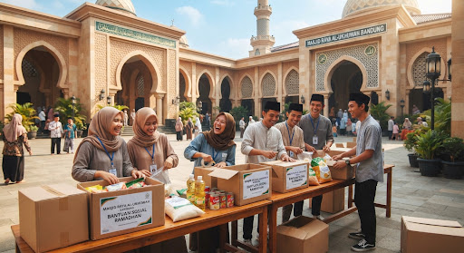

Selamat Datang di Masjid Baitul Jihad
Tempat kita bersujud dengan tenang, merajut ukhuwah islamiyah, mendalami ilmu yang menuntun, serta berbagi kepedulian nyata dalam naungan keberkahan Ilahi.
Jadwal Shalat Hari Ini
Memuat jadwal… • Waktu Indonesia Barat (WIB)
Kota Bekasi
Jadwal Sholat sedang tidak bisa ditampilkan
Kami belum berhasil mengambil data jadwal shalat. Silakan periksa koneksi internet Anda lalu coba lagi beberapa saat.
Sumber data: MyQuran API • mengacu pada jadwal resmi Kemenag Bimas Islam.
Galeri Dokumentasi
Suasana & Kegiatan Keummatan

